kInorA es una plataforma de entrenamiento personalizado con tres perfiles de uso: el usuario que entrena por su cuenta, el entrenador personal que gestiona una cartera de clientes, y el gimnasio que ofrece la plataforma a sus socios con su propia marca.
Todas las capturas de este manual se han tomado navegando la aplicación real con las cuentas de prueba listadas al final.
Entra en la aplicación con tu correo y contraseña, o con tu cuenta de Google. Si aún no tienes cuenta, el enlace Crear cuenta te registra en menos de un minuto.
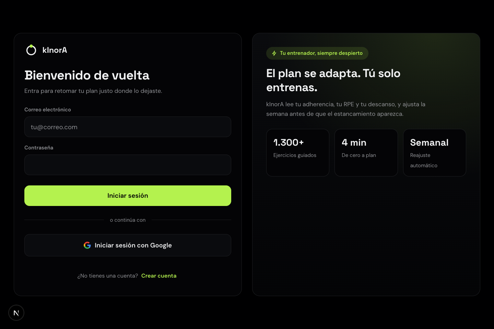
Tras iniciar sesión, la barra lateral izquierda es tu navegación permanente: Panel, Plan, Planes, Estadísticas, Historial, Crear plan, Ejercicios, Memoria y Facturación. Algunas entradas adicionales aparecen según tu perfil: Clientes si eres entrenador, Marca si gestionas un gimnasio.
Al entrar aterrizas en el Panel: la sesión recomendada de hoy (con duración y volumen previstos), tu readiness, la racha activa, el progreso de la semana y la ruta de carga semanal. El bloque Coach AI te propone ajustes concretos — aplícalos o descártalos con un clic.
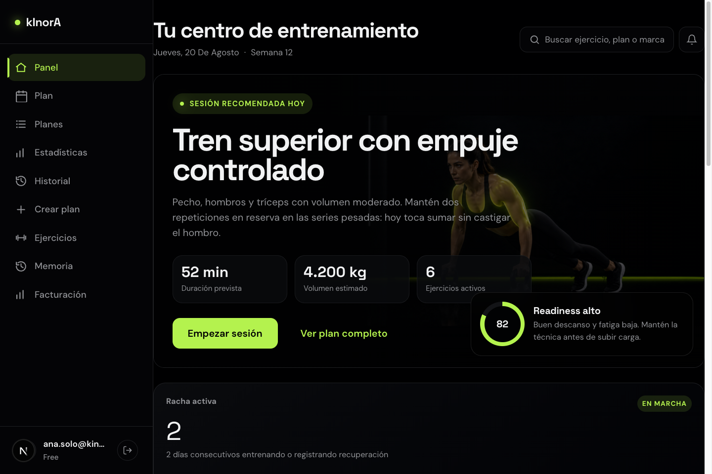
En Plan ves la semana completa: cada día con su estado (completado, pendiente, descanso) y el detalle de la sesión. Desde aquí se inicia el registro de un entrenamiento.
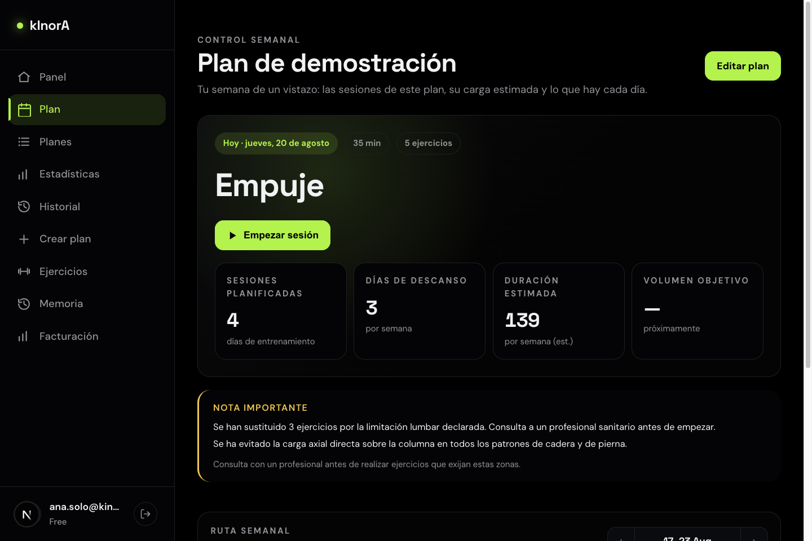
Estadísticas resume tu progreso con selector de periodo (Semana / Mes / Año): volumen total con comparación al periodo anterior, sesiones, tiempo total, récords personales (1RM estimado por ejercicio y su tendencia), tendencia de volumen y distribución por grupo muscular. Cada récord enlaza al historial del ejercicio.
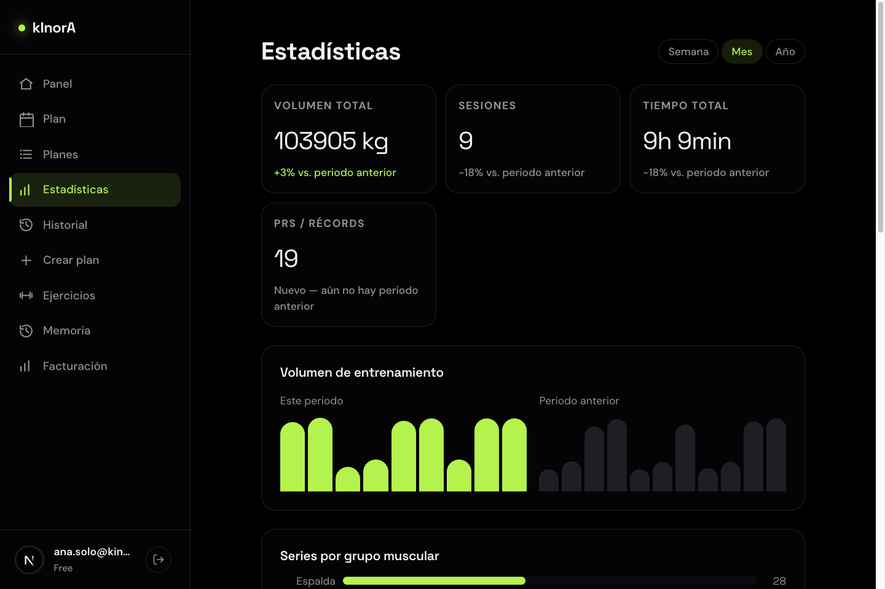
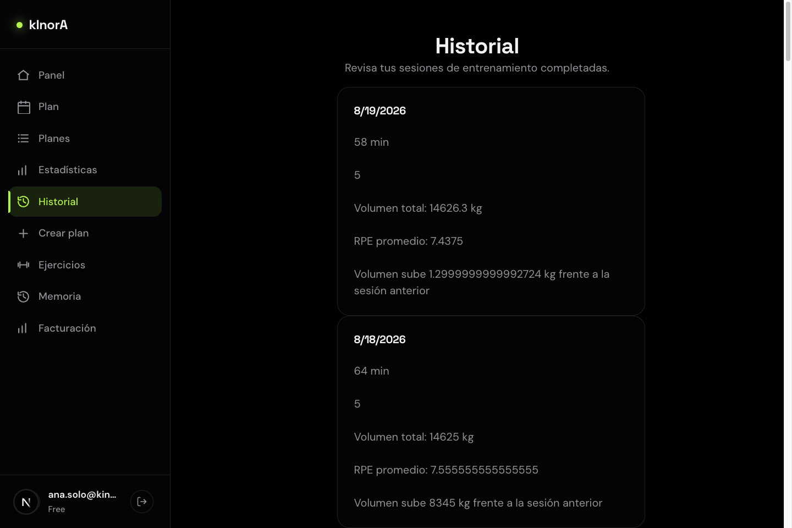
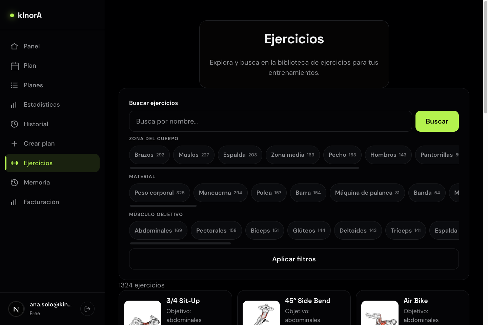
Crear plan abre el asistente de seis pasos: objetivo, días por semana, duración de sesión, lugar de entrenamiento, material disponible y limitaciones físicas. Con eso kInorA genera un plan adaptado; si declaras una limitación (por ejemplo, lumbar), el plan sustituye los ejercicios de riesgo y te lo indica.
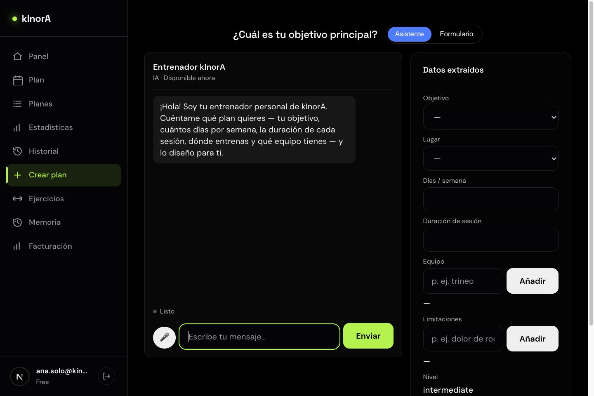
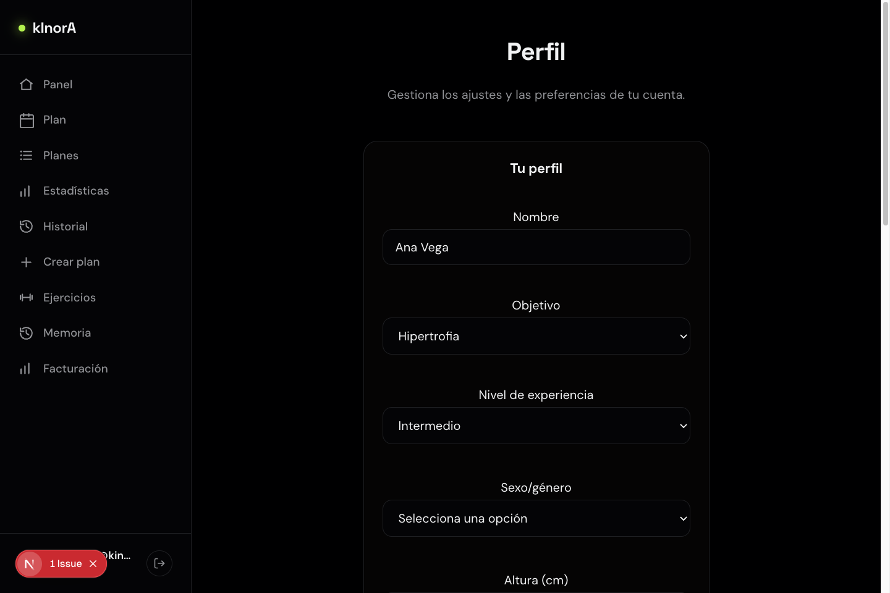
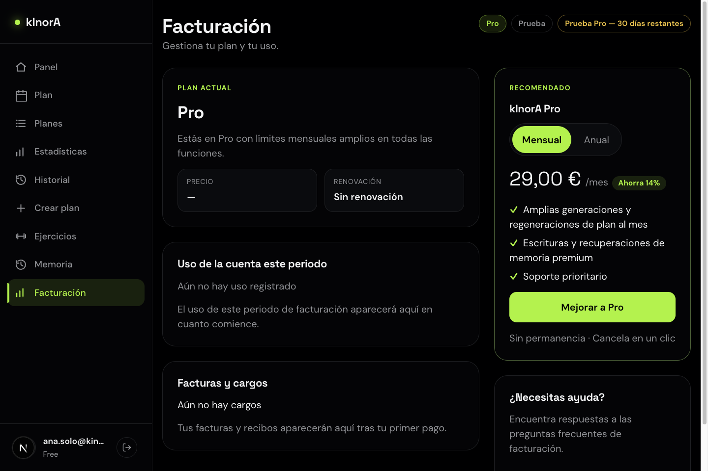
Una cuenta de entrenador ve todo lo anterior más la entrada Clientes en la navegación. El rol de entrenador lo activa el administrador de la plataforma; al concederlo, la entrada aparece automáticamente.
Clientes es tu espacio de trabajo a dos columnas: a la izquierda tu cartera — con buscador, contador y filtros Todos / Activo / Invitado — y a la derecha el detalle del cliente seleccionado. Cada fila muestra el nombre, el correo, cuándo entrenó por última vez y su adherencia de los últimos 28 días, junto al estado de la invitación.
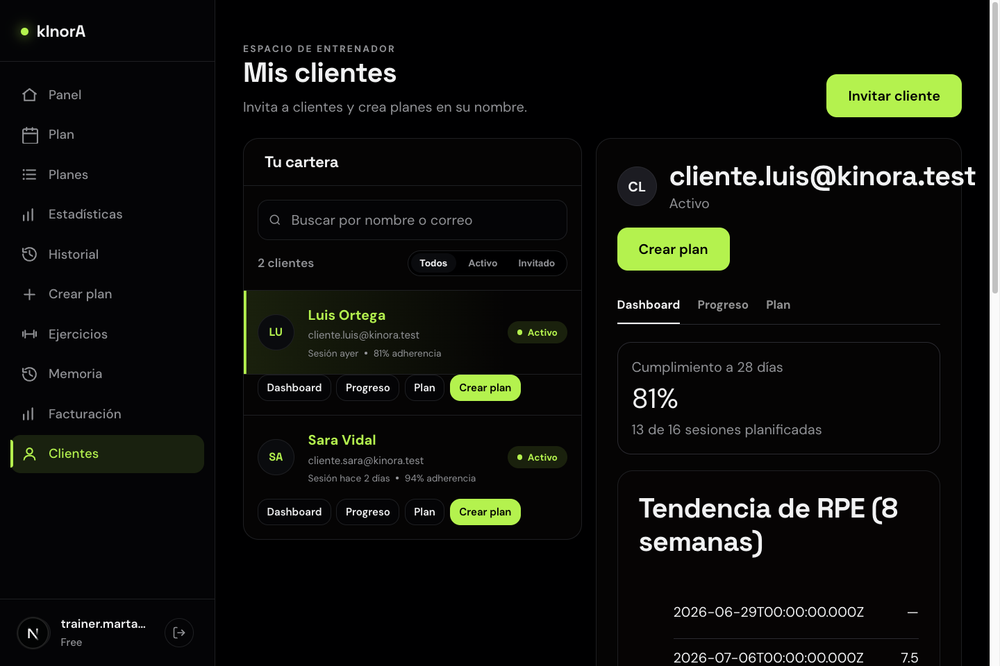
Cada cliente tiene cuatro accesos rápidos: Dashboard, Progreso, Plan y Crear plan (los dos últimos se activan cuando el cliente acepta la invitación).
El panel derecho tiene tres pestañas:
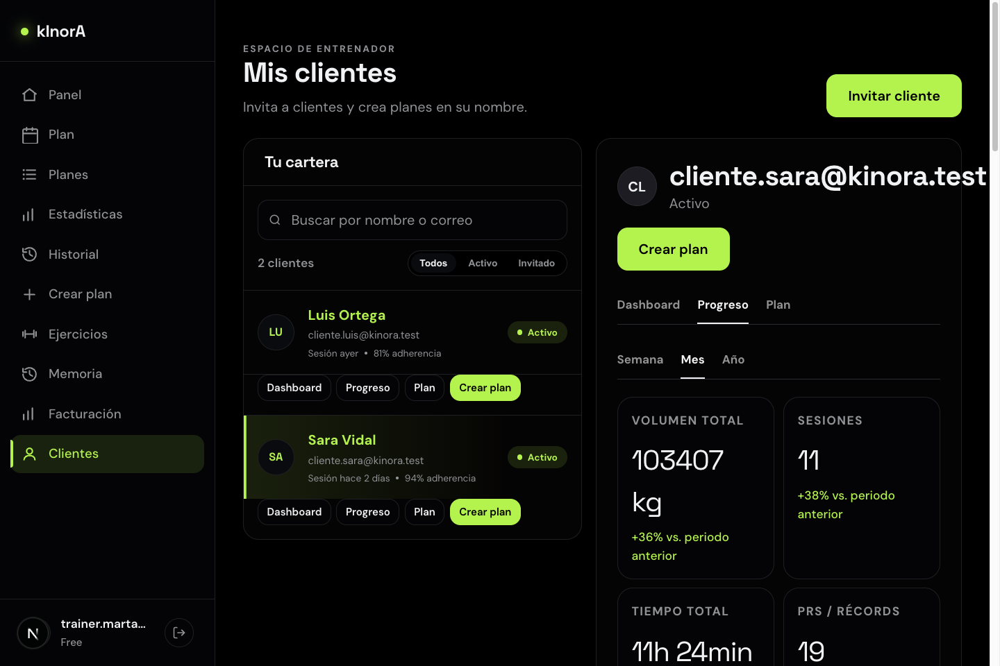
El botón Invitar cliente abre una ventana donde introduces el correo del cliente. La invitación es personal a ese correo — no se genera ningún enlace para compartir. El cliente debe tener cuenta en kInorA; cuando acepte la invitación pasará de Invitado a Activo y podrás ver su progreso y crearle planes.
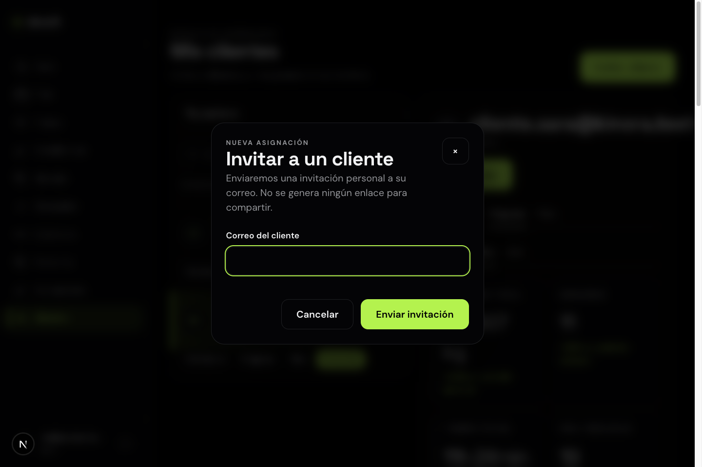
Desde la ficha del cliente (o su acceso rápido), Crear plan abre el formulario directo: objetivo, días por semana, duración, lugar y material. El plan generado pertenece al cliente — él lo ve y lo entrena como cualquier plan propio, y tú sigues su adherencia desde tu espacio.
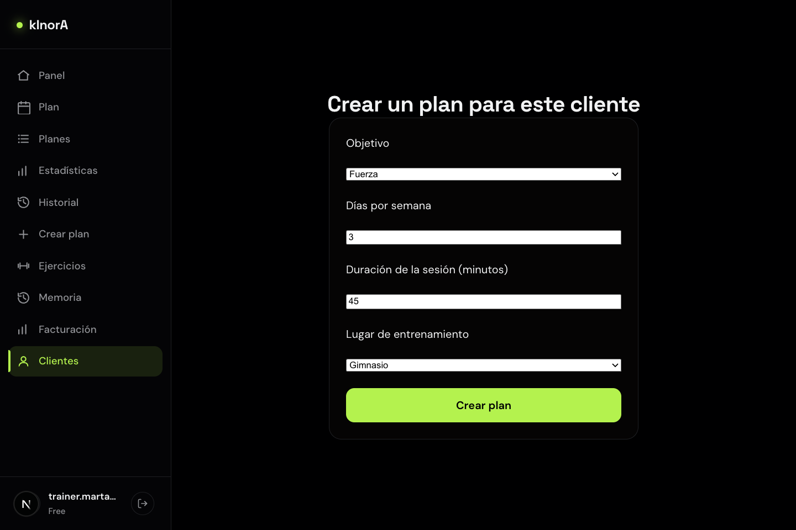
En la app móvil, el menú de inicio de una cuenta de entrenador muestra las entradas Clientes (lista, invitación y creación de planes) y Plan de entrenador. Estas entradas solo aparecen si tu cuenta de entrenador está activa y al corriente.
Una cuenta de gimnasio añade la entrada Marca a la navegación: el Estudio de marca con el que personalizas la experiencia de tus socios.
En Marca configuras:
norte.kinora.aitsai.com).La vista previa en tiempo real de la derecha muestra cómo verán tus socios la aplicación con tu identidad antes de guardar nada.
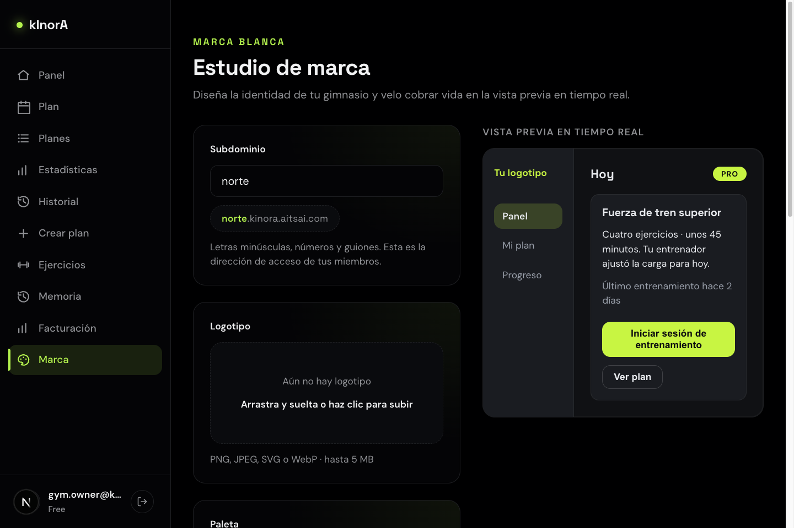
Cuando un socio entra por el subdominio del gimnasio, toda la aplicación se muestra con la marca configurada.
Facturación muestra el plan del gimnasio y su estado. El plan de gimnasio escala por número de plazas (socios).
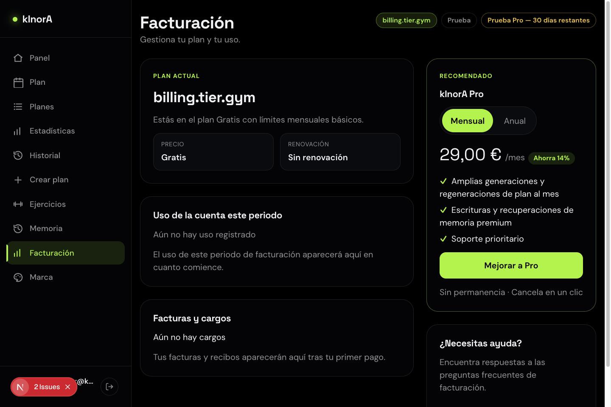
Los socios del gimnasio usan la aplicación como cualquier usuario (sección 2), con la marca del gimnasio. La gestión completa de la organización — alta de socios por el propio gimnasio y entrenadores de plantilla dentro del gimnasio — está en desarrollo; hoy los socios se registran con su cuenta y acceden por el subdominio del gimnasio.
Contraseña de todas las cuentas: Kinora.Test.2026!
| Cuenta | Correo | Perfil |
|---|---|---|
| Ana Vega | ana.solo@kinora.test | Usuaria independiente, con plan e historial de 6 semanas |
| Marta | trainer.marta@kinora.test | Entrenadora con dos clientes activos |
| Luis Ortega | cliente.luis@kinora.test | Cliente de Marta (81 % de adherencia) |
| Sara Vidal | cliente.sara@kinora.test | Cliente de Marta (94 % de adherencia) |
| Gimnasio | gym.owner@kinora.test | Cuenta de gimnasio con marca "norte" configurada |
| Entrenador de gimnasio | gym.trainer@kinora.test | Miembro del gimnasio (rol de plantilla, en desarrollo) |
| Socio | gym.socio@kinora.test | Socio del gimnasio |
Para levantar el entorno local: podman machine start && podman start kinora-postgres, y pnpm dev desde la raíz del repositorio (la web queda en el puerto 3000, o el siguiente libre si está ocupado).